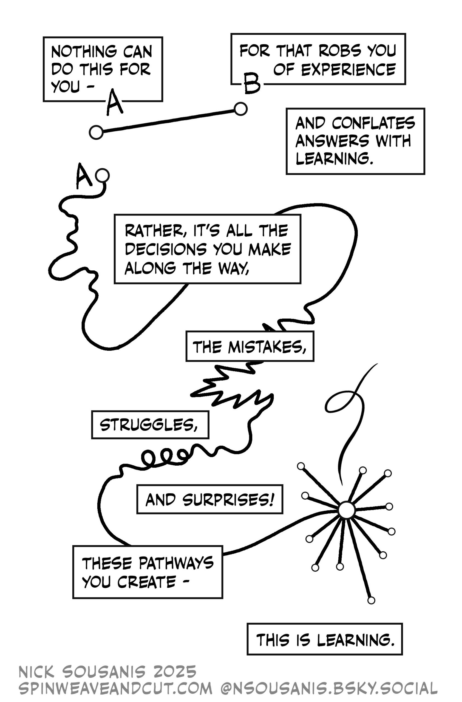

ETC5512
Wild Caught Data
Lecturer: Kate Saunders
Department of Econometrics and Business Statistics
- ETC5512.Clayton-x@monash.edu
- Lecture 1
- <a href=“wcd.numbat.space”>wcd.numbat.space
Today’s lecture
What we’ll cover:
Unit overview and details
An Introduction to Open Data
Societal importance of open data
What makes high quality open data
Learn about the different types of open data
Getting you set up in R (Drop In Session)
Acknowledgement of Country
Acknowledgement of Country
I wish to acknowledge the people of the Kulin Nations, on whose land we are gathered today. I pay my respects to their Elders, past and present.
In this unit, we will learn about how data can be transformed into information, and then into knowledge. And the many different types of data that can be used to understand our world.
Using data to understand our world isn’t new.
First nations peoples have been using data to understand country for generations. Through observing the same environment for thousands of years, they identified cause-and-effect relationships, such as subtle changes in ecosystems, and they have developed a deep understanding of native flora and fauna.
See for example: Indigenous Seasonal Calendar
Shout out to past contributors
Rome wasn’t built in a day
This unit has been running since 2020.
Their have been many members of the staff who have contributed to the development of this unit including:
- Prof. Di Cook
- Dr. Emi Tanaka
- Dr. Patricia Menendez
- Dr. Michael Lydeamore
- Dr. Joan Tan
- and many, many more …
Teaching Team
About your Lecturer
Kate Saunders
Lecturer at Monash University
👩🎓 PhD in Statistics
🌍 Home State is Queensland
👩💻 Research is in statistics of climate extremes
👩💻 Passionate about open data, data visualisation and data ethics
👨💻 Started R coding in 2012 (before tidyverse!)
❤️ Hobby is playing basketball.
About your Instructor
Krisanat Anukarnsakulchularp
PhD Student at Monash University
👨🎓 Graduated in Masters in Business Analytics
👨🎓 Monash local since undergrad
🌍 Home Country is Thailand
👩💻 PhD research is on network visualisation
👩💻 Published an R package called animbook!
❤️ Hobby is playing music.
About your Instructor
Maliny Po
Graduated in Masters in Business Analytics
👨🎓 Undergraduate degree in International Trade and Business Logistics.
👨💻 Former Student in Wild Caught Data.
👨💻 Published a data viz package called Sugarglider, as part of the Google Summer of Code program.
❤️ Enjoys reading books, lego and a good cup of coffee.
Let’s Get to Know Each Other!
Breakout Sesson: Your turn
- What was your undergraduate degree in?
- What’s your profession or profession you are interested to get in?
- What’s your hobby?
- What’s a fun fact you want everyone to know (about you)?
- If you could work with any data set what would it be?
Quick tip
Finding connections with your classmates now can lead to great project collaborations later!
Unit Details
About the unit
Unit Design
2 hours of seminars each week
1 hour tutorial each week
1 hour workshop each week
Caution
Expect ~12 hours of contact and study each week
We are learning to code. You will need to keep up with the material.
Coming to classes and consultations will help you!
Learning Objectives
At the end of this unit you will be able to:
Understand the definitions, allowed usage, digital identification and licensing of open data
Know about common open data sources, how they are used and effectively search for new sources
Explain the differences between data collection methods and the limitations for data analysis
Work with the range of different data formats of open data, including APIs
Understand ethical constraints and privacy limits when working with open data
Recognise the components of effective curation needed for open data.
Workshops
Online workshops
We’ll use these to flesh out ideas from seminars
These will be recorded (tutorials will not be)
The workshop format will change week to week depending on unit needs.
Sometimes I’ll run through examples and live code.
Sometimes I’ll answer your questions.
Sometimes I’ll run through topics to supplement your learning.
Assessments
Assignments
4 assignments worth 25% each (100% of your total grade)
Assignment 1 will cover content from weeks 1 to 3 (Due week 4)
Assignment 2 will cover content from weeks 4 to 6 (Due week 7)
Assignment 3 will cover content from weeks 7 to 9 (Due week 10)
Assignment 4 will cover content from weeks 1 to 12 (Due in exam block)
You’ll get at least 2 weeks to complete each assignment.
Warning
Failure to submit and notify the CE accordingly will result in a zero score for the assignment.
If you miss two assignments you will need to re-take the unit at a later date.
Assessments
Special Consideration
Apply for special consideration centrally. This includes short extensions of 48 hours.
If you need special consideration, apply ASAP and no later than 11.55 pm on the day your assessment is due.
If you miss an assignment through illness or personal difficulty, provided you’ve applied for special consideration there will be options for scaling or alternative assessment.
Unit Resources
Locations
Unit Website: Everything is displayed on the same page and is easy to access
Moodle: Where you submit your assignments, the discussion forum is located and I’ll make unit announcements.
Unit Github: Contains all the code, data etc to produce the unit content and website.
Getting Help
What happens if you get stuck coding
Struggle for a while!
Coding is a cycle:
- Try something
- Run it
- Check the output
- Look at the error message
- Adjust
Progress comes from iteration!
Generative AI

You can use Generative AI in this unit.
In fact I encourage it!
It’s a great tool for those learning to code
Generative AI
You can use Generative AI in this unit.
In fact I encourage it!
It’s a great tool for those learning to code
But
You must never copy and paste output from AI you don’t understand or can not explain
You must always provide appropriate acknowledge of you AI use
You need to be careful not to short cut your learning
Academic Integrity
What does academic integrity mean to you?
Still not sure - Monash Resources
What is academic integrity? Click here
What does maintaining academic integrity mean? Click here
What happens if I breach academic integrity? Click here
Where to go if you need help
Ask your peers
Suitable for:
There is a discussion forum for general questions and clarifications
Emails on general matters will be redirected to the discussion forums
Sharing helps you learn from each other!
Prevents me answering the same question twice (three times, four times etc.)
Careful about posting code from your assignments or any assignment hints to the discussion portal. I may deduct marks
Where else to go if you need help
Attend Consultation
Suitable for:
Get one-on-one help
Working through problems with your tutor
Ask questions about your assignments
Get help debugging your code
Get feedback on your assessments
Being really nerdy about the unit!
For personal and urgent inqueries
Unit Email
Suitable for:
For personal questions or issues email ETC5512.Clayton-x@monash.edu.
Response times are within 1 - 2 days but may vary during busy periods.
Also email if you notice issues with assessments or Moodle.
For remarking or to get feedback on your assessment ask your tutor and email within 10 days of receiving your marks.
Do not direct emails to my staff account, I receive a high volume of high volume of emails and they risk going into a black hole and never being seen again!
Unit Philosophy
Raw Ingredients or Final Product?
Think about this unit in the way Dr Mine Çetinkaya-Rundel describes in this talk: “Let them eat cake (first)”
Imagine you’re new to baking, and you’re in a baking class.
There are two options: which gives you better sense of the final product?


The Cooking Analogy
The Textbook Learner
- Studies cuisine history and science first
- Memorises ingredients and properties
- Learns techniques one at a time
- Reads recipes multiple times before attempting
- Measures everything precisely
- Understands the chemistry
- Follows instructions to the letter
The Cooking Analogy
The Example Learner
- Watches experienced cooks in action
- Jumps in and recreates dishes they’ve seen
- Learns through trial and error
- Focuses on outcome rather than process
- Builds intuition through observation
- Develops “feel” through practice
- Adapts recipes based on experience
How Do You Learn Best?
Breakout Discussion
Which learning approach feels more natural to you?
Discuss the advantages of each
Unit Philosophy
Cakes and Case Studies
The case studies you will see in this unit are the cakes.
By showing you what these case studies look like (cakes), we are helping you learn how to perform your own data analysis studies by example!
This may be different to how you’ve learnt in the past.
Please approach this unit philosophy with openness.
And for textbook learners: Check out the textbook R for data science
Open Data
Open Data is …
Open data is … 1
a raw material for the digital age but,
it’s unlike coal, timber or diamonds,
it can be used by anyone and everyone at the same time.
From the Open Data Institute
Open Data Institute - Dave Tarrant - EDP Module 1 from Open Data Institute on Vimeo.
What makes data open?
Open data is measured by what it can be used for, not by how it is made available.
Open Data Considerations
No limitations that prevent particular uses.
Anyone free to use, modify, combine and share, even commercially.
Free to use does not mean that it must be free to access.
There is a cost to creating, maintaining and publishing usable data.
Live data, big data and data from generative AI can incur ongoing costs.
Free to use, reuse and redistribute it - even commercially.
Definition open data
Open data can be freely used, modified, and shared by anyone for any purpose
Two types of data openness:
The data must be legally open, which means they must be placed in the public domain or under liberal terms of use with minimal restrictions.
The data must be technically open, which means they must be published in electronic formats that are machine readable and non-proprietary, so that anyone can access and use the data using common, freely available software tools. Data must also be publicly available and accessible on a public server, without password or firewall restrictions. 1
Concept Check
Pop Quiz! ❤️
Try the quizzes here
More on Open Data
Why do we need open data?
Help make governments more transparent!
- Open data allowed citizens in Canada to save the government billions in fraudulent charitable donations
Building new business opportunities
- Transport for London has released open data that developers have used to build over 800 transport apps.
Protecting people and our environment
- Open data can support early warning systems for environmental disasters
- Open data is also helping consumers to understand their personal impacts on the environment
Where do I find Open Data?
Globally
- http://dataportals.org/search
- http://data.un.org/
- https://datacatalog.worldbank.org/
- https://data.gov/ (US)
- https://opendataimpactmap.org/eap (EAP)
Australian governement examples:
- http://www.data.gov.au/
- https://www.data.vic.gov.au/
- https://data.melbourne.vic.gov.au/
And so many more places …
Wait …
How do I tell if data I find is open?
Licences!
Licences tells people how they can access, use and share data.
Why license open data?
Licenses
Without a licence, users may find themselves in a legal grey area.
Data may be ‘publicly available’, but users may not have permission to access, use and share it under general copyright or database laws.
An open data licence is an explicit permission to use the data for both commercial and non-commercial purposes.
Open data publishers should provide easy access to the licence for all datasets that are available to access, use and share.
Organisations and governments use Open Data licenses to clearly explain the conditions under which their data may be used.
Open data licenses
Examples include:
Standard re-usable license: consistent and broadly recognised terms of use
Creative Commons, particularly CC-By and CC0 https://creativecommons.org/
Open Database License https://opendatacommons.org/licenses/odbl/
Bespoke licenses: e.g. for governments, international organisations
- UK Open Government License http://www.nationalarchives.gov.uk/doc/open-government-licence/version/3/
- The World Bank Terms of Use https://data.worldbank.org/summary-terms-of-use
TLDR
Many licenses have a summary version that helps convey the most important information to users and a detailed version that provides the complete legal foundation.
Quick comment
Licence type
Standard licenses can offer several advantages over bespoke licenses.
Standard licences have greater recognition among users, increased interoperability, and greater ease of compliance.
Concept Check
Pop Quiz! ❤️
Try the quizzes here
How do I tell if Open Data is any good?
Metadata: data about data
Information components
- Source
- Structure
- Underlying methodology
- Topical
- Geographic and/or temporal coverage
- License
- When it was last updated
- How it is maintained
Standards frameworks
- Dublin Core Metadata Initiative (DCMI) provides a framework and core vocabulary of metadata terms
- Governments develop metadata models for uniformity
- Australian government metadata standards
Examples from Canadian government
Example datasets
Key metadata elements
- Title: what data contains and where it comes from
- Description: details to quickly understand relevance
- Publisher: who originated and maintains the dataset
- License: terms of use
- Contact information: for questions or clarification
- Frequency: interval data is updated
- Date modified: last update timestamp
- Spatial coverage: relevant geographic area
- Temporal coverage: time period covered
- Open data formats: available file formats
Machine Readable
‘machine readable’ is not the same as ‘digitally accessible’
Historical efforts have focused on:
pushing static information about government programs and services to the web,
where the intended use is a human who can read, print, and take actions based on reading.
It’s a narrow vision of the expected users and uses of the data.
Machine Readable
Machine Readable
- Machine readable formats expand field of vision to new users and new uses and require technologies like XML and JSON
- 😿 PDF is not suitably machine readable
- 😀 CSV (or XLSX, XLS) is common, and universally accessible, but should be structured for analysis not for reading
- 😸 XML, JSON is verbose, can contain metadata, but needs special readers
- 🤩 API provides an interface that other software can utilise to automatically extract and process
Five star open data scheme
5 ⭐ ratings:
This web site 5 ⭐: Open Data at provides a rating system for deploying open data.
⭐ An open license.
Make your stuff available on the Web (whatever format) under an open license⭐, ⭐ Re-usable format.
Make it available as structured data (e.g., A proprietary format like excel instead of image scan of a table.)⭐, ⭐, ⭐ Open format.
Make it available in a non-proprietary open format (e.g., CSV instead of Excel)⭐, ⭐, ⭐, ⭐ use (Uniform Resource Identifiers (URIs).
URIs help you reference your data, like a unique address and gives context to the values.⭐, ⭐, ⭐, ⭐, ⭐ Linked data
Your data doesn’t exist in isolation. Your data links/ connects to other relevant data sets.
FAIR principles for scientific data
Learn more at fair.org
FAIR Principles
Findable Metadata and data should be easy to find for both humans and computers. Machine-readable metadata are essential for automatic discovery of datasets and services.
Accessible Once the user finds the required data, they need to know how can they accessed that data, possibly including authentication and authorisation.
Interoperable The data usually need to be integrated with other data. In addition, the data need to interoperate with applications or workflows for analysis, storage, and processing.
Reusable The ultimate goal of FAIR is to optimise the reuse of data. To achieve this, metadata and data should be well-described so that they can be replicated and/or combined in different settings.
Publishing data
Publishing Your Data
Research data is increasingly seen as part of the corpus of scholarly publications.
Publishers, funders and governments support researchers to publish their data outputs by various policies, guidelines and mandates.
Obtaining a Digital Object Identifier system (DOI) provides a persistent identifier, and can be used for data. Two services in Australia:
- Australian Research Data Commons (ARDC) can generate a DOI for you.
- Australian National Data Service
Many open data sets provide information on how to cite them, when used in other forms of publication.
Open data quality
Legal requirements:
- Protect sensitive information like personal data
- Preserve the rights of data owners
- Promote correct use of the data
Practical requirements:
If you provide a link to the data on a website:
- Update the data regularly if it changes
- Commit to continuing to make the data available
Technical requirements:
- Think about the structure/format in which the data is published
- The channels through which the data is available
Common pitfalls with open data
Watch out for:
- Mixed date formats american/european
- Multiple representations differences in abbreviations, capitalisation, spacing
- Duplicate records
- Redundant data
- Mixed numerical scales
- Spelling errors
- Inconsistent naming
- Missing values
What is hidden data?
Open Data Institute - Dave Tarrant - EDP Module 12 from Open Data Institute on Vimeo.
Let’s look at https://www.realestate.com.au/buy
Concept Check
Pop Quiz! ❤️
Try the quizzes here
Some more examples of open data
- Airline traffic in the USA https://www.bts.gov
- Australian Bureau of Statistics http://stat.data.abs.gov.au
- Australian Electoral Commission https://www.aec.gov.au
- National Longitudinal Survey of Youth (NLSY) https://www.nlsinfo.org/investigator/pages/search?s=NLSY79
- Atlas of Living Australia https://www.ala.org.au
- Australian bushfires from satellite hotspot remote sensing https://www.eorc.jaxa.jp/ptree/registration_top.html (also see resulting analysis at https://ebsmonash.shinyapps.io/VICfire/)
- John Hopkins Coronavirus tracking https://coronavirus.jhu.edu/data
- OECD Programme for International Student Assessment http://www.oecd.org/pisa/data/
- Melbourne pedestrian counting system http://www.pedestrian.melbourne.vic.gov.au/
In your own time
Exercise
Look at these open data examples:
Consider the interface
Look for licensing
Find explanations of what’s in the data
Review the meta data
Flavours of Open Data
This is Prof Di Cook’s taxonomy!
Long shelf life, highly processed
- Convenient, but contains unhealthy ingredients, and is a bad habit
- eg iris, mtcars, titanic, handwritten digits
- Found at eg UCI Machine learning archive
Orphans
- File dumped on an archive
- Stale, could date your results
- Sadly often found in places like https://data.gov.au
Synthetic
- Used primarily these days for privacy protection
- Correct up to the model used to simulate the data - misses interesting structure in data not captured by model
- Very pretty, very consistent, but it can burn you
- eg OECD Programme for International Student Assessment A generalised linear model is fitted to the scores, with predictors such as school, gender, … Model is used to simulate a score for each student.
- eg Also be aware of fraud Article in the Lancet (2020)
Wild
Fresh, interesting, exciting
But also challenging!
Real world data sets, with real world messiness
eg US Bureau of Transportation Statistics air traffic database
Fresh and local
Best kind of wild data
Collected locally, and about our own lives
Wild-caught data
Our working definition of wild caught data is:
data the can be freely used, modified, and shared by anyone for any purpose, AND
The data source is traceable, the data collection is transparent, and the data is updated as new measurements arrive, AND
In case of data processing, the process is clearly described and reproducible.
What about your favourite datasets?
Are they Wild?
✅ Freely available to be used and modified
✅ Can be shared
✅ Data provenance is clear
✅ How the data was collected is transparent
✅ Data is updated as new measurements become available
✅ Any processing of this data is clear
Wrap Up
Summary
Open data: definitions, sources and examples
Introduced you to the Open Data Fundamentals
eg. power for societal good, where to access, limitations, licencesData Quality Elements
eg. meta data, machine readable, FAIR, five star ratingsWild Caught Data Meaning
and other flavours of open dataTeaching philosophy of cake first!
Workshop Slides
Learning R
Getting set up
By the end of this unit you’ll be performing your own analytics case
studies
Before you can do that we need to get you set up with the software
you’ll use in this unit
We’ll now go through the steps to install R and RStudio
Think about R as the engine and RStudio as the dashboard and
controls.
We need both to drive a car.
Installing R and RStudio
We’ll open RStudio to perform data analytics using R.
Step 1: Install R
Got to https://www.r-project.org/
Click “download R”
Select a mirror (I use the Melbourne one)
Install for your operating system
Step 2: Install RStudio
Got to https://www.rstudio.com/products/rstudio/download/ (you only
need the free version)
Select download for your system
Follow the prompts to install
But Why?
Why do we need a Programming Language
It allows us to have reproducible steps, which can be applied for many different data sets
Make sure the analysis is not just point and click, you can work as a team on it on the same code
It also means we can more easily perform our own case studies in analytics
Why do we use R?
It has been around for a while.
It is regularly maintained and is open source.
It is beginner friendly
Even if you use other languages, you might still use R for your data wrangling and visualisations
Getting Started in R
Learning a new language is hard!
You need to think about grammar and structure, and how to communicate well in it!
You will make mistakes, lots of them.
Below you see code that plots points showing the GDP per capita against life expectancy. The points are coloured by country and the size of the points shows the population.
It might look impossible now, but by the end of this semester you will be able to write this yourself!
Check your understanding
Note
- R vs RStudio
- Console vs Script
- Assigning a variable
- Basic computation
- Naming variables
- Installing and loading packages
- Setting up an R Project
- Reading in data
Code from today
# create a file that I can save and use again
# assign a variable
x = 2
y <- 3
# what should I not call my variable
kates_coolest_variable <- 4 # snake_case
katescoolestvariable <- 4 # ok but not readable
KatesCoolestVariable <- 4 # ok but could be easier to read
123kate <- 5 # bad
@kate <- 5 # also bad
kates_awesome_variable <- 5
kate_loves_R <- 6
# what we learn:
# give variables files/intuitive names
# don't name variable starting with numbers or
# or special characters
# bunch of inbuilt functions
sqrt(2)
1:10
mean(1:10)
# load in the functions
library(cowsay)
# check what they do
?cowsay
?say
# look at examples
say(what = "hot diggity", by = "frog")
say(what = "Happy Lunar New Year",
by = "endlesshorse")
# Summary:
# Install the cowsay package (first time use)
# Load the library
# print out a say - with an animal and a message
# past into our meeting chat
# Reading in files
# Can use the import dataset button
# but not advisable for reproducible reserach
# Can also use a direct file path
# But if you change the working directory
# the data read fails
library(tidyverse)
file_path = "Documents/Git/dvac-SSA/assignments/data/tourism_data.csv"
tourism_data <- read_csv(file_path)
View(tourism_data)
# Instead set up the project
# Then the working directory will be that project
# No need for long path names
getwd()
tourism_data <- read_csv("data/tourism_data.csv")
View(tourism_data)
ETC5512